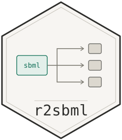

Limitations and unimplemented behaviour
Source:vignettes/limitations.Rmd
limitations.RmdThis vignette is the honest inventory: what r2sbml does
not do, what it does only partially, and — the part that matters most in
practice — which of those gaps announce themselves and which do
not.
Read vignette("r2sbml", package = "r2sbml") first for
how the package is meant to be used.
library(r2sbml)
ex <- function(f) system.file("examples", f, package = "r2sbml")
# convertReactions() reports progress on the console; keep only the warnings
convert <- function(file, format = "R", out = tempfile()) {
tryCatch({
invisible(capture.output(convertReactions(file, out, format = format)))
cat("no warning\n")
}, warning = function(w) cat(conditionMessage(w), "\n"))
invisible(out)
}
sbml_file <- function(body) {
f <- tempfile(fileext = ".xml")
writeLines(sprintf('<?xml version="1.0" encoding="UTF-8" ?>
<sbml xmlns="http://www.sbml.org/sbml/level3/version2/core" level="3" version="2">
<model>%s</model>
</sbml>', body), f)
f
}The single most important table
Generated code that fails loudly is a nuisance. Generated code that runs and quietly returns the wrong numbers is a hazard. Here is where each limitation falls:
| Limitation | How you find out |
|---|---|
| Coupled or nonlinear algebraic rules in mrgsolve / rxode2 / ubiquity | R warning + comment in the file |
| Coupled or nonlinear algebraic rules that do not form a square system | R warning + comment |
| Dilution for an assignment-rule volume that cannot be differentiated | R warning |
| A value the model leaves undefined |
R warning, written as NaN
|
| Constructs with no ubiquity spelling |
R warning + # WARNING block in the
file |
| An id renamed because the target reserves it | console message |
delay in the other five targets |
silent — code fails at run time |
root(n, x) of a negative x, n
not a literal |
silent — NaN, even for an odd
n
|
| Events | silent — a count in the header comment only |
factorial in C++ and Julia |
silent — untested |
| Inconsistent initial conditions for a DAE | solver error, not mentioning SBML |
| A semantically invalid model | silent — nothing is validated |
Everything below expands on these.
How far the output has been checked
The deSolve output is checked numerically against the SBML Test Suite:
each case is converted, simulated and compared with the suite’s expected
time course within the case’s own tolerances. Of the 1011 semantic cases
in scope, 1007 pass. “In scope” leaves out every case
using a construct r2sbml does not translate: events,
delay, rateOf, fast reactions,
stoichiometryMath and the SBML Level 3 packages. The four
that fail in scope are listed at the end.
The other five targets share the same model preparation and the same
expression rewriting, so most of what the suite checks applies to them
too — but they are verified only on purpose-built probe models, against
closed-form solutions: mrgsolve and rxode2 compiled and run, MATLAB
under Octave, Julia with DifferentialEquations.jl, and
ubiquity built with build_system() and run on both its C
and R engines. None of them is run against the full suite.
Scope: reading and exporting only
r2sbml has no setter API. You cannot change a species’
initial value, add a reaction, or write SBML back out. There is no
setSpecies(), no writeSBML(), and
getModel() returns an opaque external pointer rather than
an R-side object you could edit.
If you need to modify models programmatically, use libSBML’s own R
bindings or edit the XML directly. r2sbml is for inspecting
a model and getting simulation code out of it.
Per-target capability matrix
| Feature | deSolve | mrgsolve | rxode2 | MATLAB | Julia | ubiquity |
|---|---|---|---|---|---|---|
| Rate rules / reactions | yes | yes | yes | yes | yes | yes |
| Assignment rules, returned as outputs | yes | yes | yes | yes | yes | yes |
| Boundary / constant species | yes | yes | yes | yes | yes | yes |
| Initial-condition unit conversion | yes | yes | yes | yes | yes | yes |
| Algebraic rules linear in one unknown | yes | yes | yes | yes | yes | yes |
| Coupled or nonlinear algebraic rules (DAE) | yes | no | no | yes | yes | no |
| Compartment with a rate rule, and dilution | yes | yes | yes | yes | yes | yes |
| Compartment with an assignment rule, and dilution | mostly | mostly | mostly | mostly | mostly | mostly |
delay |
no | no | no | no | no | no |
| Events | no | no | no | no | no | no |
| Exponentiation spelling | ^ |
pow() |
^ |
^ |
^ |
SIMINT_POWER |
“mostly” for an assignment-rule compartment means the dilution term is formed whenever the rule can be differentiated; see below.
Algebraic rules
An algebraic rule is a constraint 0 = f(...), not a
derivative. SBML does not say which variable a given rule determines, so
r2sbml works it out.
Rules linear in one unknown become assignments
An unknown is a species, parameter or compartment that is
not constant and has no rate or assignment rule. When a rule names
exactly one unknown and is linear in it, r2sbml solves it,
and the rule becomes an ordinary assignment rule — which every target
supports. Here 0 = k - 0.9 defines a parameter that has no
value of its own:
linear <- sbml_file('
<listOfParameters><parameter id="k" constant="false"/></listOfParameters>
<listOfRules><algebraicRule><math xmlns="http://www.w3.org/1998/Math/MathML">
<apply><minus/><ci>k</ci><cn>0.9</cn></apply></math></algebraicRule></listOfRules>')
out <- convert(linear, "mrgsolve")
#> no warning
grep("k = ", readLines(out), value = TRUE)
#> [1] "double k = -(0.0 - 0.9) / (1.0 - 0.9 - (0.0 - 0.9));"
#> [2] "k = -(0.0 - 0.9) / (1.0 - 0.9 - (0.0 - 0.9));"The solution is x = -f(0) / (f(1) - f(0)), written out
as is rather than simplified, which is why it reads as it does. Solving
repeats until nothing more can be solved, so a rule that becomes linear
in one unknown once another has been solved is solved too. Every
algebraic rule in the SBML Test Suite is of this kind.
The solution divides by the unknown’s coefficient. A rule such as
(k3 + 1) * S = T with k3 = -1 determines
nothing, and the generated code returns NaN there.
Coupled or nonlinear rules become a DAE where the target can solve one
What is left — rules that each name several unknowns, or are
nonlinear in the one they name — makes the model a
differential-algebraic system. deSolve, MATLAB and Julia can each solve
one, and r2sbml emits a real DAE for them: a
daspk residual function, or a singular mass matrix.
sbmlalgebraicrules.xml is such a model, since both of its
rules name both E and ES. The constraint is
genuinely enforced:
out <- convert(ex("sbmlalgebraicrules.xml"))
#> no warning
env <- new.env(); source(out, local = env)
d <- as.data.frame(deSolve::daspk(y = env$InitialAmounts, dy = env$InitialDerivatives,
times = seq(0, 10, by = 2), res = env$massBalances,
parms = env$parameters))
max(abs(d$E + d$ES - d$E_total)) # constraint residual, ~1e-13
#> [1] 1.511014e-13mrgsolve, rxode2 and ubiquity integrate ODEs only. There the rule is written out as a comment, the species it constrains is left at a zero derivative, and a warning is raised:
convert(ex("sbmlalgebraicrules.xml"), "mrgsolve")
#> mrgsolve cannot enforce the 2 algebraic rule(s) in this model. They are written out as comments, and the species they constrain are left at a zero derivative, so the generated code runs but does not honour the constraint.The DAE path has three further limits
The system must be square. Only species are
candidates for a DAE row, and a DAE is emitted only when the number of
remaining algebraic rules equals the number of undetermined species.
Otherwise r2sbml falls back to comments and a warning
rather than guess. A bipartite matching over the variables each rule
names would widen this; it is not implemented.
Consistent initial conditions are assumed, not
checked. A DAE has to start on the constraint manifold.
sbmlalgebraicrules.xml happens to. A model that does not
will fail inside the solver — daspk cannot find consistent
initial conditions, ode15s rejects the initial state — and
the error will not mention SBML or
r2sbml.
daspk’s estini cannot be used as
is. It can estimate consistent initial values, but requires the
algebraic equations to come last in the residual vector, which the
current row ordering does not guarantee.
Compartments whose volume changes
When a volume changes, so does every concentration in it:
[S] = n/V gives the dilution term
-[S] * (dV/dt) / V, which libSBML’s own reaction conversion
leaves out and r2sbml adds.
A compartment with a rate rule is fully handled:
dV/dt is the rule.
A compartment with an assignment rule
V = g(...) needs dV/dt worked out by
differentiating g — with respect to time, and through the
chain rule with respect to every integrated state it reads.
r2sbml does that for sums, products, quotients, powers and
roots, exp, ln, log, and the
trigonometric and hyperbolic functions:
volume <- function(rule) sbml_file(sprintf('
<listOfCompartments><compartment id="c" size="1" constant="false"/></listOfCompartments>
<listOfSpecies><species id="A" compartment="c" initialConcentration="2"
hasOnlySubstanceUnits="false" boundaryCondition="false" constant="false"/></listOfSpecies>
<listOfParameters><parameter id="g" value="1" constant="true"/></listOfParameters>
<listOfRules><assignmentRule variable="c">
<math xmlns="http://www.w3.org/1998/Math/MathML">%s</math></assignmentRule></listOfRules>', rule))
time <- '<csymbol encoding="text" definitionURL="http://www.sbml.org/sbml/symbols/time">time</csymbol>'
growing <- volume(sprintf('<apply><plus/><cn>1</cn><apply><times/><ci>g</ci>%s</apply></apply>', time))
out <- convert(growing)
#> no warning
grep("dA_dt = ", readLines(out), value = TRUE) # V = 1 + g t, so dV/dt = g
#> [1] " dA_dt = -A * (1 * g) / c ## includes dilution by the changing volume"It falls back to a warning, and no dilution term, when the rule reads
a species (whose own derivative would then depend on the volume’s), or
depends through time or a state on piecewise,
min, max, abs, the inverse
trigonometric functions or factorial:
capped <- volume(sprintf('<apply><min/><cn>5</cn><apply><plus/><cn>1</cn>
<apply><times/><ci>g</ci>%s</apply></apply></apply>', time))
convert(capped)
#> Compartment(s) c follow an assignment rule, so deSolve receives the right volume but no dilution term for the species inside them. d[S]/dt is missing -[S]*(dV/dt)/V: the rule could not be differentiated (it reads a species, or uses piecewise, min, max, abs or another function r2sbml does not differentiate).Events that change a compartment size are not handled, for the same reason events in general are not.
delay
SBML’s delay csymbol passes through unchanged into every
target:
out <- convert(ex("sbmldelay.xml"))
#> no warning
grep("delay", readLines(out), value = TRUE)
#> [1] " dP_dt = (1 / (1 + m * delay(P, delta_t)^q) - P) / tau"delay() is not a function in base R, in C++, in MATLAB
or in Julia, so this code does not run anywhere. A delay-differential
equation needs a different solver interface entirely —
deSolve::lagvalue() for R, and the equivalent per target.
Only the ubiquity writer notices:
convert(ex("sbmldelay.xml"), "ubiquity")
#> ubiquity has no equivalent for: delay. They were written out unchanged and the system file will not build until they are replaced.For the other five targets this is silent.
sbmldelay.xml is the one example model whose generated
deSolve, mrgsolve, rxode2, MATLAB and Julia output will not run.
Events
Events are not exported at all. They survive as a number in the header comment and nothing else:
out <- convert(ex("sbmlevent.xml"))
#> no warning
grep("events", readLines(out), value = TRUE)
#> [1] "## events: 2"sbmlevent.xml has two events, and neither appears in the
generated code. The simulation will run — and will silently ignore every
trigger, delay and event assignment in the model. You can still inspect
them from R:
getEventMath(getModel(ex("sbmlevent.xml")))
#>
#> filename: /home/runner/work/_temp/Library/r2sbml/examples/sbmlevent.xml
#> error(s): 0
#>
#>
#> File: /home/runner/work/_temp/Library/r2sbml/examples/sbmlevent.xml (Level 3, version 2)
#> Event 0 trigger: 1 * (P1 > tau)
#> EventAssignment 1, trigger: G2 = 1
#> Event 1 trigger: 1 * (P1 <= tau)
#> EventAssignment 1, trigger: G2 = 0
#> [1] 0Translating them would mean mapping SBML triggers onto each target’s
own mechanism — deSolve’s events/roots,
mrgsolve’s $EVENT, and so on — which differ enough that
there is no shared representation to generate from.
Mathematics
Most of SBML’s MathML is rewritten into each target’s own spelling:
piecewise becomes nested conditionals,
ceiling, infinity, NaN and the booleans are
spelled per target, and the Level 3 Version 2 functions
(sec and its relatives, the inverse functions,
quotient, rem, implies,
exponentiale, avogadro, log with
a base, root, and n-ary relationals and logical operators)
are expanded into functions every target has. A logarithm with a base
and a cube root, for instance:
maths <- sbml_file('
<listOfParameters>
<parameter id="x" value="8" constant="true"/>
<parameter id="a" constant="false"/><parameter id="b" constant="false"/>
</listOfParameters>
<listOfRules>
<assignmentRule variable="a"><math xmlns="http://www.w3.org/1998/Math/MathML">
<apply><log/><logbase><cn>2</cn></logbase><ci>x</ci></apply></math></assignmentRule>
<assignmentRule variable="b"><math xmlns="http://www.w3.org/1998/Math/MathML">
<apply><root/><degree><cn>3</cn></degree><ci>x</ci></apply></math></assignmentRule>
</listOfRules>')
out <- convert(maths)
#> no warning
grep("^ +[ab] = ", readLines(out), value = TRUE)
#> [1] " b = (2 * (x >= 0) - 1) * ((2 * (x >= 0) - 1) * x)^(1 / 3)"
#> [2] " a = log(x) / log(2)"
out <- convert(maths, "mrgsolve")
#> no warning
grep("^double [ab] = ", readLines(out), value = TRUE)
#> [1] "double b = (2.0 * (x >= 0.0) - 1.0) * pow((2.0 * (x >= 0.0) - 1.0) * x, 1.0 / 3.0);"
#> [2] "double a = log(x) / log(2.0);"The cube root is longer than x^(1/3) because it keeps
the sign of x: an odd root of a negative number is real,
but x^(1/3) is NaN there. The mrgsolve
spelling shows one more rewrite: every whole-number literal is written
as a double, because in C++ 1 / 3 divides as integers and
is 0. The ubiquity output does the same, since ubiquity compiles it as
C.
What is not covered:
root(n, x) is written
x^(1/n), except that for a literal odd n it
keeps the sign of x, so the cube root of -8 is
-2. A degree that is not a literal number cannot be checked
for oddness, so there a negative x gives NaN
even when a real root exists.
factorial passes through unchanged. It
is a function in R and MATLAB; in C++ and Julia it is untested, and
Julia’s factorial accepts only an integer.
quotient and rem follow
libSBML’s own definitions, floor(a/b) and
a - b * floor(a/b). No test case has a negative operand, so
whether that matches the intended truncation towards zero is
unchecked.
ubiquity has no spelling for factorial
or delay. They are written out as plain calls, and the
writer puts a # WARNING block in the file as well as
raising an R warning. That matters more for ubiquity than elsewhere:
build_system() accepts the file, and the failure surfaces
much later as a C compile error naming a shared object, with nothing
pointing back at the model.
Initial assignments are evaluated by libSBML, which
treats a numeric piecewise condition other than 0 or 1 as
false. A model relying on piecewise(0, 5, 1) taking the
first branch gets the second.
Values and names
Values the model leaves undefined
SBML lets a parameter omit its value and a compartment its size, as
long as something else defines it. When nothing does,
r2sbml writes the target’s not-a-number and warns, naming
the variable, rather than make up a plausible value:
undefined <- sbml_file('
<listOfParameters><parameter id="k" constant="true"/></listOfParameters>')
convert(undefined)
#> No value is defined for k, so deSolve receives NaN for it. If an algebraic rule determines it, r2sbml could not solve that rule for it: only a rule linear in a single undetermined variable is solved.The same warning appears for a NaN the model assigns
deliberately, where it is less apt.
Ids the target reserves
An SBML id can be a reserved word in the target (TRUE,
Inf, if), a built-in constant, or a name the
generated code itself uses (time, Julia’s p,
MATLAB’s t and y). Such an id is renamed by
appending _, and the conversion says so:
reserved <- sbml_file('
<listOfParameters><parameter id="Inf" value="2" constant="true"/>
<parameter id="v" constant="false"/></listOfParameters>
<listOfRules><assignmentRule variable="v"><math xmlns="http://www.w3.org/1998/Math/MathML">
<apply><times/><ci>Inf</ci><cn>3</cn></apply></math></assignmentRule></listOfRules>')
out <- tempfile()
msg <- capture.output(convertReactions(reserved, out, format = "Julia"))
grep("Renamed", msg, value = TRUE)
#> [1] "Renamed Inf to Inf_: the name is reserved in Julia."deSolve output keeps the SBML id as every name its results carry, so its columns are unchanged — except for a renamed compartment, which is a top-level variable there. The other targets show the new name. Three gaps remain:
- rxode2 exports no list of its reserved names, so
r2sbml’s list holds only those found by probing it. - An id that is not a valid name in the target at all, rather than a
reserved one, is not renamed. libSBML promotes a local parameter
k1of reaction_J0to_J0_k1, which R does not accept. - rxode2’s
ini()block rejects an infinite parameter value, and no spelling avoids that.
No validation is performed
getModel() and convertReactions() stop if
libSBML reports an error while reading the file, but reading is
not validation. Neither runs a consistency check, so a model that loads
cleanly may still be semantically invalid — inconsistent units, an
overdetermined system, a species referenced before it is defined.
If you need validation, run it through libSBML’s own validator or the
online SBML
validator first. r2sbml assumes the model it is given
is a correct one.
Quirks of the query functions
These are not code-generation issues; they affect the inspection API.
Initial values are reported as the file states them
getSpeciesIC() returns whichever of
initialAmount or initialConcentration the
model actually sets — a species carries one or the other, never both —
and names the result by species id:
model <- getModel(ex("sbmlsimple.xml"))
#>
#> filename: /home/runner/work/_temp/Library/r2sbml/examples/sbmlsimple.xml
#> error(s): 0
#>
#>
#> File: /home/runner/work/_temp/Library/r2sbml/examples/sbmlsimple.xml (Level 3, version 2)
getSpeciesIC(model)
#> E S P ES
#> 5e-21 1e-20 0e+00 0e+00No unit conversion is applied. That is deliberate: a
query function should report the file. So a model that mixes
amount-valued and concentration-valued species yields a vector that
mixes units, and getSpeciesIC() deliberately disagrees with
the initial conditions convertReactions() writes, which are
divided by compartment volume because the generated ODE integrates
concentrations:
out <- convert(ex("sbmlsimple.xml"))
#> no warning
grep("^ +E = [0-9]", readLines(out), value = TRUE) # 5e-07 = 5e-21 / 1e-14
#> [1] " E = 5e-07,"getSpeciesTable() shows which column each species used,
so you can tell the units apart:
getSpeciesTable(model)[, c("ID", "InitialConcentration", "InitialAmount")]
#> ID InitialConcentration InitialAmount
#> 1 E NaN 5e-21
#> 2 S NaN 1e-20
#> 3 P NaN 0e+00
#> 4 ES NaN 0e+00A species that sets neither attribute — its value comes from an
initial assignment or a rule — is reported as NA rather
than a fabricated 0. Note that NA there is
distinct from the NaN in the table above, which marks the
attribute the model simply did not use.
Names fall back to the id
SBML distinguishes id, which every element must have,
from name, an optional human label.
getSpeciesNames() and getCmtNames() both
return the name where one is set and the id
otherwise, which is how SBML tools conventionally display an
element:
getSpeciesNames(model)
#> [1] "E" "S" "P" "ES"
getCmtNames(model)
#> [1] "comp"None of the ten examples sets a name, so both come back
as ids. Use getSpeciesTable(), which keeps ID
and Name in separate columns, if you need to know whether a
label was actually present.
Absent components raise an error
getRuleMath(model) # sbmlsimple.xml has no rules
#> Error:
#> ! No Rules present in the model.This is by design: a query for a component the model does not have is an error, not a zero-row result. The message names the component, so a caller catching it can tell “no rules” from “no parameters” without capturing stdout.
Things that are correct but easy to misread
NaN in getSpeciesTable() is not a
bug. It marks the attribute the model did not set.
Console output is not part of the return value.
getRuleMath() and friends return 0 invisibly
and print their content, so x <- getRuleMath(m) gives
you 0. Use capture.output().
Compartment volumes are constants in the generated code — when the model says they are constant. That is not the volume being ignored.
Assignment-rule variables appear as outputs, not states. They are recomputed from the states at every time point and returned beside them; the solver never integrates them.
ubiquity bounds are -inf inf.
Deliberate: an SBML value may be zero or negative, and a lower bound
above the value would be inconsistent. ubiquity itself maps the
-inf lower bound to .Machine$double.xmin, the
smallest positive double — harmless for simulation, wrong for
parameter estimation.
The generated header comment counts model components, including ones that were expanded away (function definitions, initial assignments) or not exported (events). It describes the SBML file, not the generated code.
Generated code is a starting point
Even where everything above is satisfied, treat the output as a first draft:
- The time span is a placeholder —
[0 10]for MATLAB,(0.0, 10.0)for Julia, and nothing at all for the R targets, which leave the call to you. - Solver tolerances are defaults, and no target’s generated code sets
them. Some models are stiff enough to need tuning:
sbmlmutlicompartment.xml(rate constants from 2500 to 25000) integrates cleanly tot = 1withdeSolve’s defaults but exhaustslsoda’s step budget beforet = 5, returning early with a warning rather than an error. - No unit checking is performed.
r2sbmlconverts initial conditions between amount and concentration using compartment volume, but it does not verify that the model’s declared units are mutually consistent, and it does not convert between, say, millilitres and litres.
The SBML Test Suite cases that still fail
For completeness, the four in-scope cases that fail:
| Case | Cause |
|---|---|
| 01121 |
_J0_k1, a promoted local parameter, is not a valid R
name |
| 01282 | libSBML’s evaluation of a numeric piecewise
condition |
| 01323 | a relative error of about 3.5e-08, just outside the case’s tolerance |
| 01486 | not yet diagnosed |
Where these are tracked
The package keeps todo.md in its source repository
recording each known gap along with how it was found, so a claim here
can be checked against the reasoning behind it before anyone acts on it.
The test suite covers every limitation that has a defined behaviour —
the warnings, the fallbacks, and the closed-form solutions used to
verify the DAE and dilution paths.